A trained LLM only knows what was in its data and can only talk back at you. This lecture is about closing both gaps — connecting it to current knowledge with RAG, and letting it act through tool calling and agents. It builds up in order, with a running teddy-bear example, from retrieval to the ReAct loop to multi-agent systems and safety.
Watch on YouTubeA trained model only knows what was in its data, frozen at a knowledge cutoff (GPT-5's, for instance, is September 2024). Retraining to add knowledge is risky and impractical, and you can't just dump everything into the prompt: context windows are finite (~hundreds of thousands of tokens), you pay per token, and performance actually drops when the prompt is stuffed with irrelevant text.
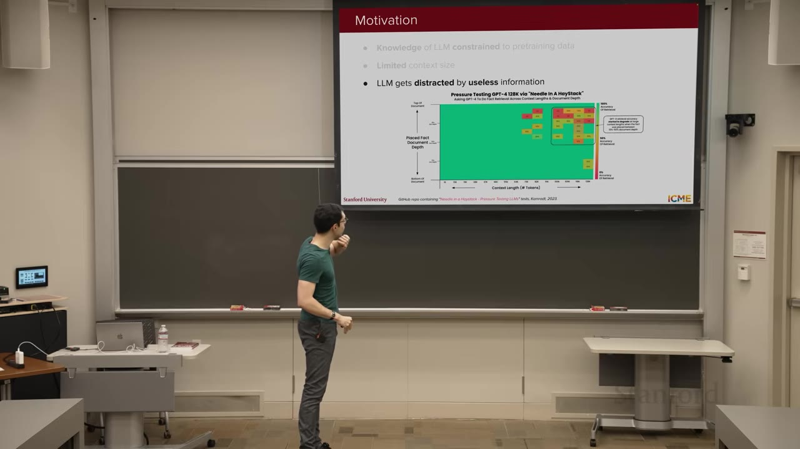
The fix is to put only the relevant information in the prompt. That's RAG: retrieve the relevant documents for a query, augment the prompt with them, then generate the answer. In effect you're handing the model the answer inside the prompt — so the whole technique lives or dies on the retrieval step.
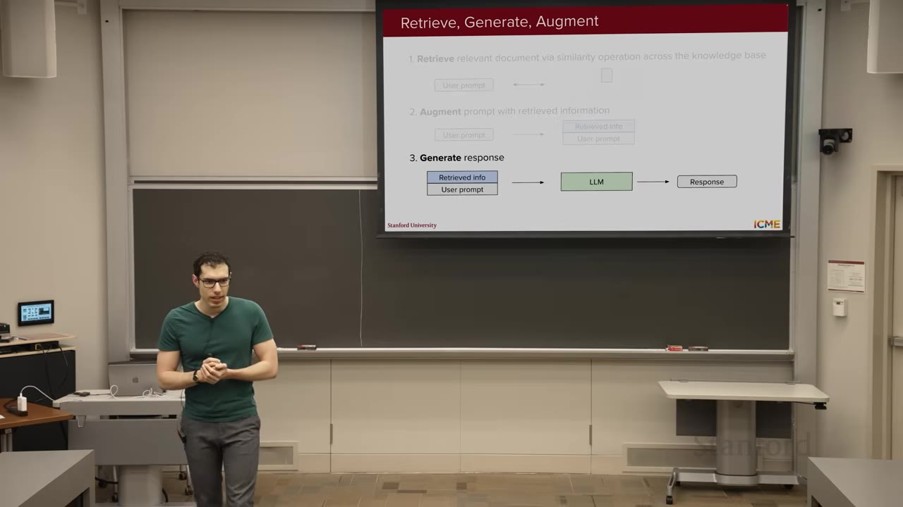
Before you can retrieve, you build a knowledge base: collect the documents, split them into chunks (a few hundred tokens each), and compute an embedding for each chunk. Three knobs to tune: embedding size (≈ thousands of dimensions; bigger captures nuance but costs space and compute), chunk size (too small loses context, too large blurs meaning), and overlap between chunks (so a chunk keeps the context of the one before it).
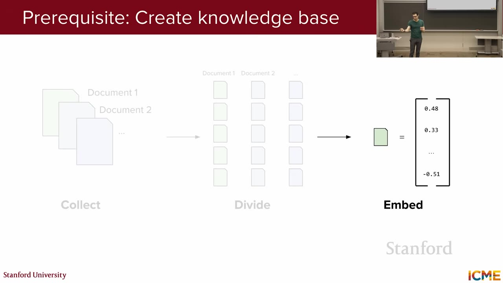
Retrieval borrows the recommender-systems playbook: two stages. Candidate retrieval quickly narrows millions of chunks to ~100 by embedding the query and doing a cosine-similarity search (using approximate-nearest-neighbor methods to avoid a linear scan). Because query and chunks are embedded separately, this is a bi-encoder setup, and the goal here is recall — cast a wide net.
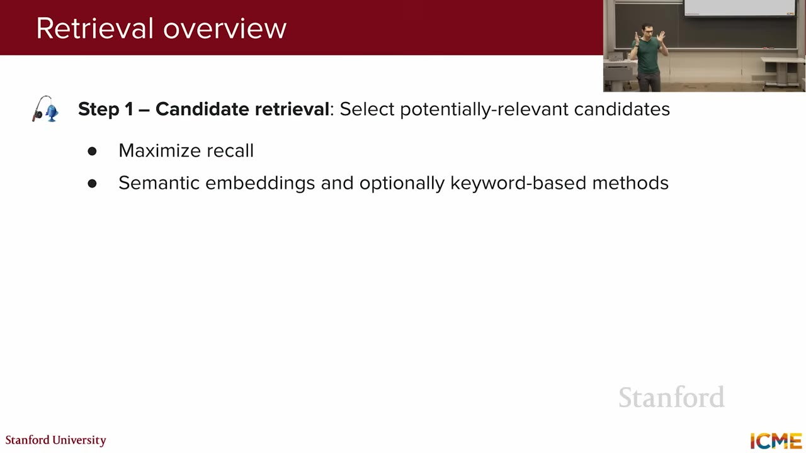
Embedding search finds chunks that mean the same thing — but it won't guarantee the exact keyword is present. When you need that (searching for "Cuddly," not just something cuddly-adjacent like "Huggy"), BM25 is a heuristic score based on word overlap between query and document. Many systems run a hybrid of embedding search plus BM25.
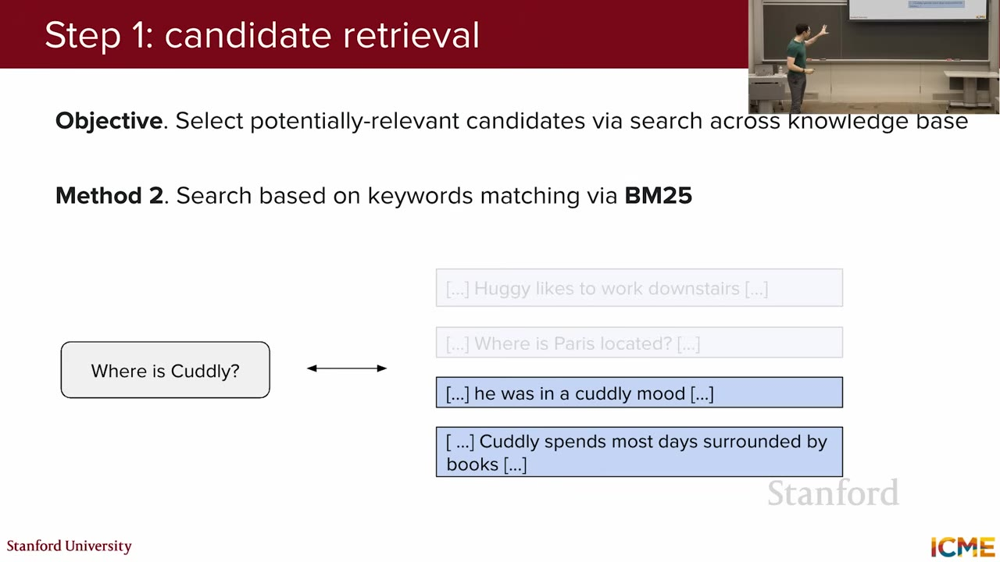
Chunks cut at a fixed token count can lose their meaning out of context. Contextual retrieval prepends a short, LLM-written summary of what you need to know to understand each chunk — based on the whole document. That's a lot of LLM calls, so it leans on prompt caching: reuse the same prefix across prompts and you compute its activations once, then look them up.
The optional second stage is reranking: instead of comparing pre-computed embeddings, feed the query and a candidate chunk together into the model (a cross-encoder) so attention can capture their interaction, and score relevance directly. It's heavier, but you only run it on the ~100 candidates. Then you measure.
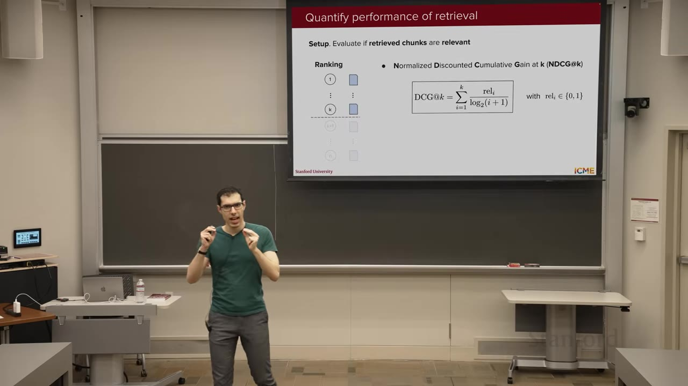
ranking quality, weighted toward the top, normalized to [0,1]
inverse rank of the first relevant result
the classic metrics, over your top-k
a standard benchmark to compare retrievers
Where RAG injects unstructured documents, tool (function) calling lets the LLM act through structured functions. You show the model a documented function — its name, arguments, and docstring, but not the implementation. The loop has three stages: the LLM picks the function and fills its arguments from your query; your code actually runs the function; then the LLM turns the structured result into a natural-language answer.
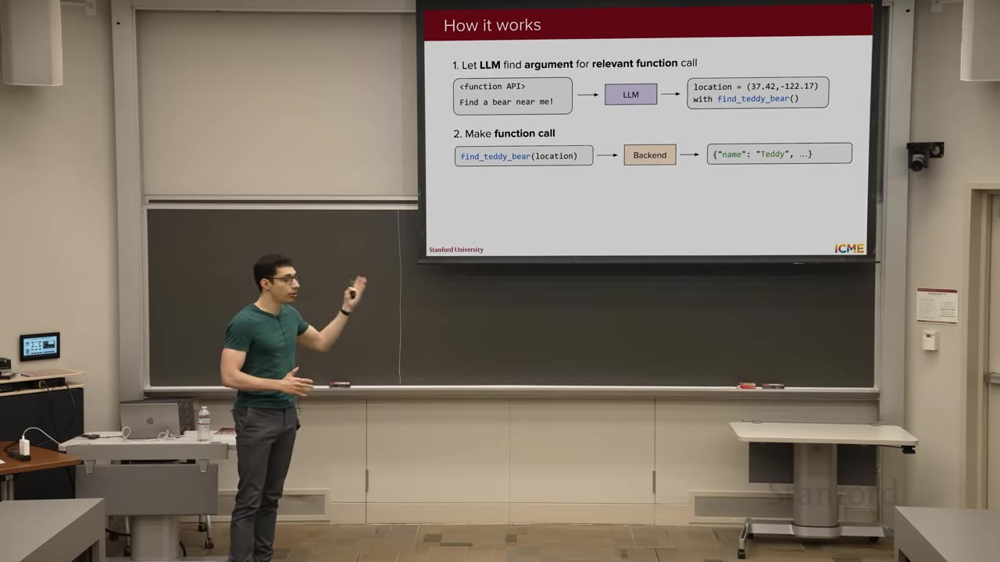
find_teddy_bear(location) calls an API, returns a structured object, and the model reads it back to you in words. Tools span information (search, weather, stocks), computation (run code), and actions (send an email — and hit send).01:10:20How do you get the model to do this? One way: two sets of SFT pairs — one mapping query → tool call, one mapping the tool's result (plus conversation history) → final answer. But modern models already read code well, so you can often skip SFT and just write a prompt explanation of the tool.
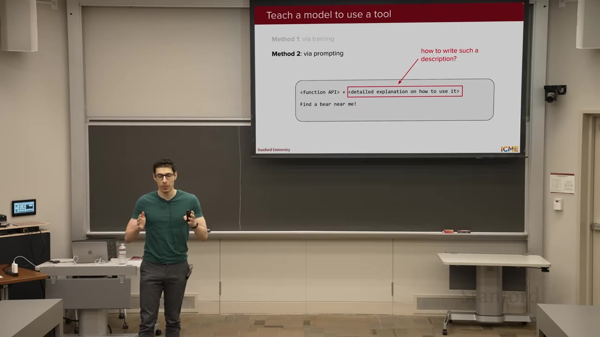
In practice you expose many tools, and a big tool list recreates the needle-in-a-haystack problem — plus context is finite, so you can't fit everyone's tools at once. A tool selector (or router) fixes the first: given the query and a list of tool names, an LLM picks the few relevant ones, and only those go into context. The second problem — every model defining tools its own way — is what MCP addresses.
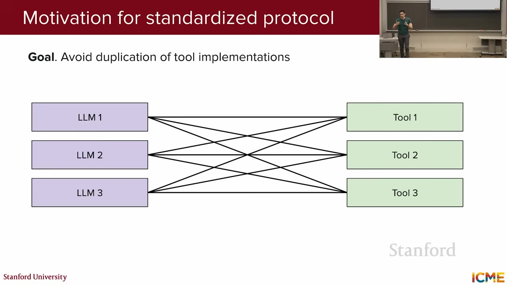
An agent sits one layer above tools: it autonomously pursues a goal, with reasoning loops, not just a single call. The hallmark is ReAct (reason + act), which decomposes a task into repeated stages — here framed as observe → plan → act.
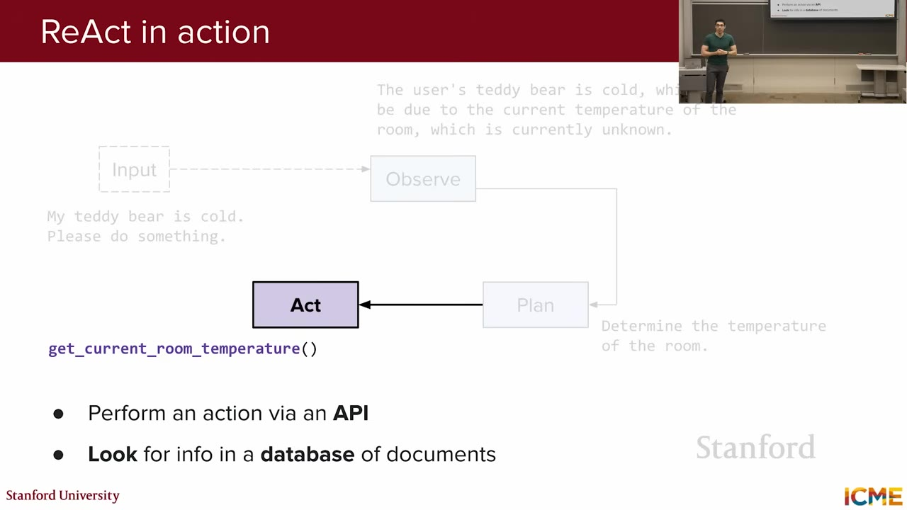
get_current_room_temperature(); observe reads 65°F as colder than expected; plan/act raise it — then the loop exits and answers the user.01:36:40Once you have one agent, you can have several — a thermostat agent, an energy-management agent, an air-quality agent — and let them coordinate. That need for a common language between agents is why Google released the agent-to-agent (A2A) protocol: each agent exposes a set of skills (with examples), plus a defined way to execute a request, report status, and cancel.
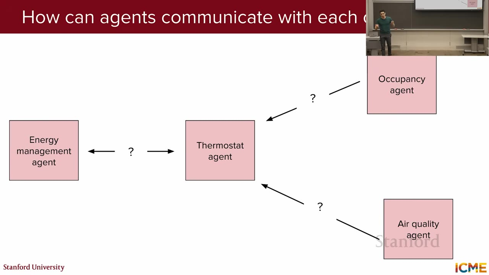
New power, new risks: a model that can act can be turned against you — e.g. data exfiltration, where a prompt makes an email tool send out a user's password. Defenses come at two points: training (safety data in the SFT/RL mix) and inference (a safety classifier judging the conversation). The lecture notes Anthropic's just-published report on a large-scale cyberattack that abused tool and agent capabilities — proof the stakes are real.
Generating code is cheap, but judging whether a code is correct and does the right thing — this is the hard part. Your taste is going to matter most from now on.— Shervine Amidi